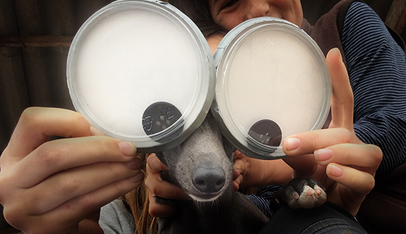
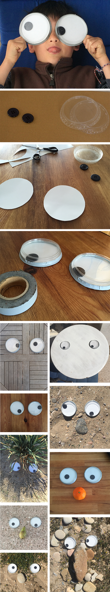

The largest moving eyes of the world. You only need transparent yogurt caps, white cardboard and large buttons. The cap is used as a template on the cardboard and after cutting the circles you glue them with a good adhesive tape to the lap, leaving the button in the inside. A walk is quite fun with these eyes, you can´t imagen what kind of noses you are able to find... :-)
Los ojos móviles más grandes del mundo. Sólo necesitas unas tapas transparentes de yogurt, cartulina blanca y grandes botones. La tapa se utiliza como plantilla y luego se pega el cartón cortado con una buena cinta adhesiva a la tapa. El botón suelto en medio. Los paseos con estos ojos son muy divertidos ...no os imagines que narices se pueden encontrar ... :-)
Die grössten Wackelaugen der Welt. Man braucht nur durchsichtige Joghurtbecherdeckel weisse Pappe und grosse Knöpfe. Die Deckel benutzt man als Schablone auf der Pappe und klebt diese dann ausgeschnitten mit einem guten Klebeband an den Deckel. Der Knopf kommt natürlich in die Mitte. So kann man einen Spaziergang ganz schön aufpeppeln... was man alles für Nasen findet... :-)
